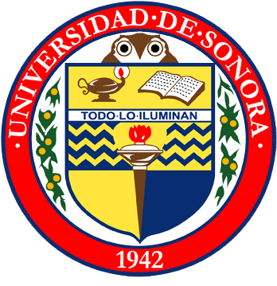
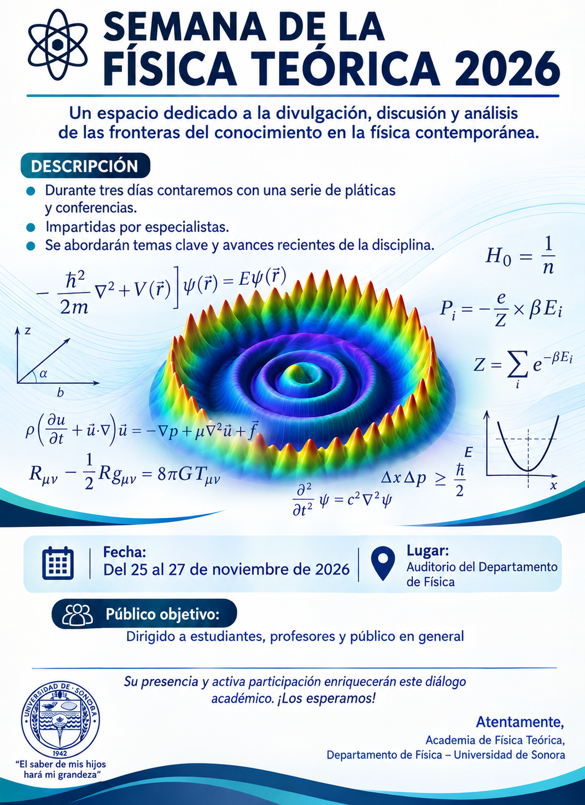

Academia de Física Teórica, Departamento de Física
Fecha: 25, 26 y 27 de Noviembre de 2026 | Horario: 16:00 a 20:00 hrs
logo.png en la raíz de tu repositorio.poster.png.foto1.jpg, foto2.jpg y foto3.jpg.
| Hora | Actividad / Plática | Ponente |
|---|---|---|
| 16:00 - 16:20 | Inauguración y Bienvenida | Comité Organizador |
| 16:30 - 17:20 | La Ecuación de Dirac con Álgebra Geométrica (el espín, el reloj de de Broglie y el zitterbewegung en una visión unificada) | Dr. Arnulfo Castellanos Moreno |
| 17:30 - 18:00 | Receso / Café | - |
| 18:00 - 18:50 | Sobre cristales líquidos nemáticos | Dr. Luis Patricio Ramirez Rodríguez |
| 19:00 - 19:50 | Como un accidente nuclear me transformo en Hulk | Dr. Bruce Banner |
| Hora | Actividad / Plática | Ponente |
|---|---|---|
| 16:00 - 16:50 | Una mirada al Cosmos a través del Hielo: Francis Halzen, IceCube y la Nueva Frontera de la Física Teórica | Dr. León Manuel García de la Vegar |
| 17:00 - 17:50 | Cómo la mecánica clásica predijo a Neptuno | Dr. José Daniel Castro Cisneros |
| 17:50 - 18:20 | Receso / Café | - |
| 18:20 - 19:10 | Cómo una picada de araña radiactiva me dio poderes aracnidos | Peter Parker |
| 19:20 - 20:00 | Cómo manejar una escuela con persona X-traordinarias | Dr. Charles Xavier |
| Hora | Actividad / Plática | Ponente |
|---|---|---|
| 16:00 - 16:40 | Mensaje de la Dra. Ana María Cetto para las jóvenes y los jóvenes que estudian ciencia | Dra. Ana Maria Cetto Kramis |
| 17:00 - 18:50 | Sesión de Posters | Estudiantes participantes |
| 19:00 - 20:00 | Clausura y Convivio | Comité Organizador |
Institución: Departamento de Física, UNISON
Título de la plática: La Ecuación de Dirac con Álgebra Geométrica (el espín, el reloj de de Broglie y el zitterbewegung en una visión unificada)
Resumen: El Álgebra Geométrica (AG) es un formalismo matemático que permite describir toda la física en un solo lenguaje y contiene: los vectores, matrices, espinores y tensores. Junto con el cálculo geométrico es un marco matemático más potente que contiene a la variable compleja y al cálculo de formas como casos particulares. El AG permite escribir la ecuación de Dirac sin usar matrices y facilita una descripción basada en números reales con vectores en el espacio tiempo de Minkowski. Permite reinterpretar su solución con un significado geométrico en el que el electrón sí tiene trayectoria y ésta es de tal forma que se puede recuperar la visión de de Broglie sobre la existencia de un movimiento periódico interno en la partícula. Allí mismo se logra explicar en qué consisten el espín y el zitterbewegung. El espíritu crítico de Hestenes representa un programa de investigación activo y una lente interpretativa poderosa. La interpretación del zitterbewegung como una trayectoria real y su extensión a la teoría cuántica de campos, el entrelazamiento, etc. son objeto de debate en la actualidad. No implica que la mecánica cuántica estándar está mal, significa que la AG nos ofrece una intuición física alternativa muy fértil que nos invita a seguir explorando..
Institución: Departamento de Física, UNISON
Título de la plática: Una mirada al Cosmos a través del Hielo: Francis Halzen, IceCube y la Nueva Frontera de la Física Teórica
Resumen: En octubre de 2026, la Real Academia de las Ciencias de Suecia reconoció con el Premio Nobel de Física a Francis Halzen por su visión pionera al concebir y liderar el Observatorio de Neutrinos IceCube en el Polo Sur, transformando un kilómetro cúbico de hielo antártico en el telescopio de partículas más grande del planeta. Mas allá de ser un hito de la física experimental, IceCube nació de las inquietudes de un físico teórico y fenomenólogo decidido a someter el Modelo Estándar y el Universo extremo a pruebas inalcanzables para los aceleradores terrestres. Esta charla recorre el desarrollo de IceCube y profundiza en su impacto transformador en la física teórica: desde la confirmación de la resonancia de Glashow a 6.3 PeV y la cartografía de la interacción bariónica mediante neutrinos de ultra-alta energía, hasta las restricciones severas a la violación de la invariancia de Lorentz (LIV), las oscilaciones a distancias cosmológicas y la apertura de la astronomía multimensajero junto a las ondas gravitacionales y los rayos gamma.
Institución: Departamento de Física, UNISON
Título de la plática: Cómo la mecánica clásica predijo a Neptuno
Resumen: El descubrimiento de Neptuno en 1846 es reconocido como uno de los grandes ejemplos del poder predictivo de la Física Matemática. La acumulación de décadas de observaciones astronómicas mostró discrepancias entre la posición de Urano y la predicha al tomar en cuenta las perturbaciones debidas a los cuerpos conocidos del Sistema Solar. Este conflicto llevó a conjeturar la existencia de un cuerpo en la región exterior del Sistema Solar, y personajes de la época como John Couch Adams y Urbain Le Verrier lograron inferir las propiedades orbitales de lo que hoy conocemos como el planeta Neptuno. En esta charla revisaremos el problema desde una perspectiva moderna. Partiendo de las ecuaciones de movimiento y de la teoría de perturbaciones orbitales, se analizará cómo la presencia de un planeta exterior produce desviaciones medibles en la órbita de Urano. Además de su valor histórico, este ejemplo permite introducir ideas que continúan siendo fundamentales en la Física moderna, como el uso de métodos perturbativos, el planteamiento de problemas inversos y la detección indirecta de objetos
Institución: Departamento de Física, UNISON
Título de la plática: Estudio de cristales líquidos nemáticos
Resumen: En la presente platica se describirá la propagación de pulsos en una guía de onda cilíndrica cuyo revestimiento es un cristal líquido de tipo nemático. El vector director nemático a considerar es de la forma 𝑛̂=𝑠𝑒𝑛𝜃𝑟̂+𝑐𝑜𝑠𝜃𝑧̂ y, la polarización del paquete de onda es TM. Al realizar el análisis del presente sistema aparece la ecuación de Schrodinger no-lineal para la amplitud del paquete de ondas de polarización TM.
Institución: Instituto de Física, UNAM
Título de la plática: Mensaje de la Dra. Ana María Cetto para las jóvenes y los jóvenes que estudian ciencia